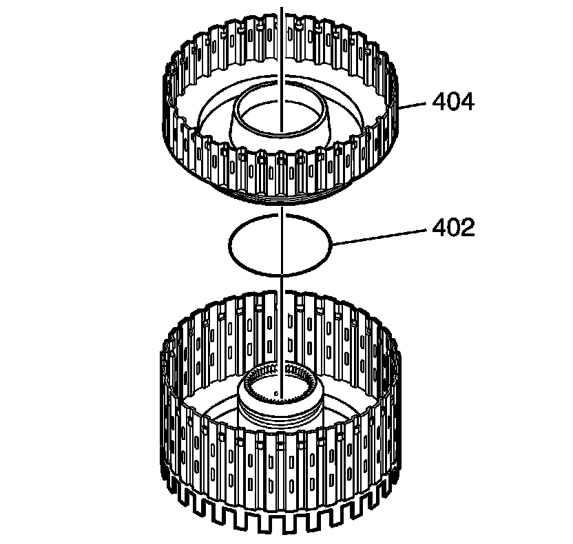
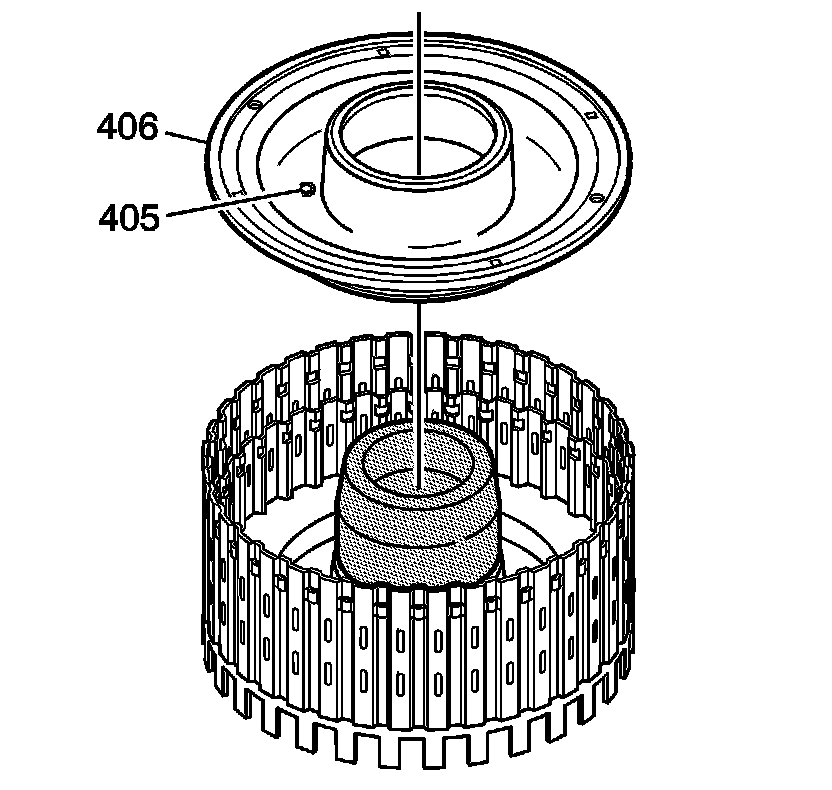
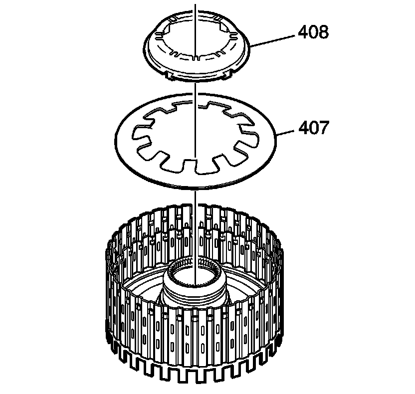
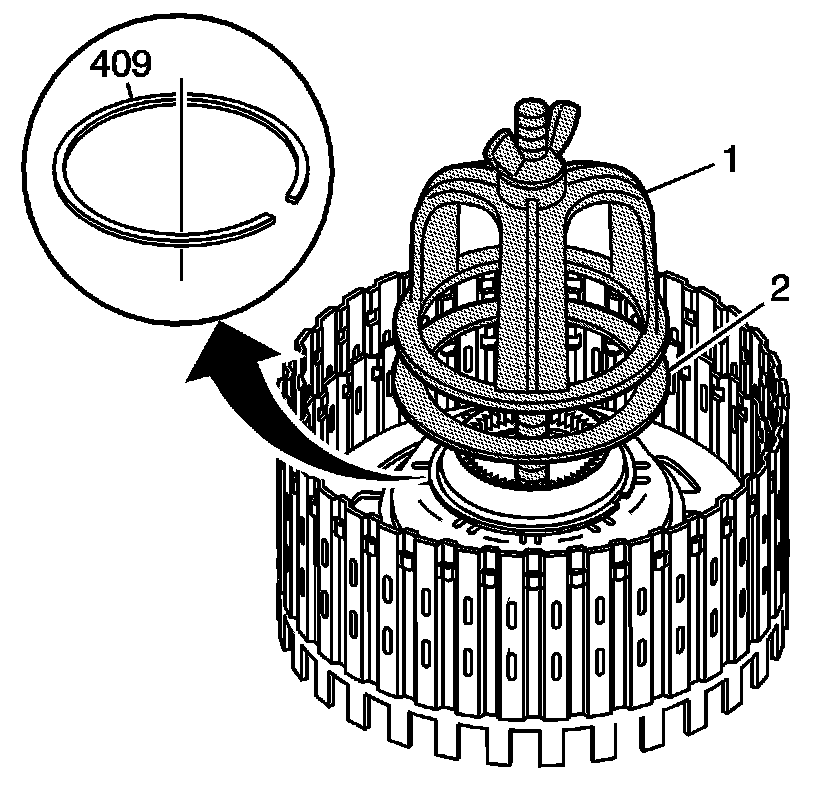
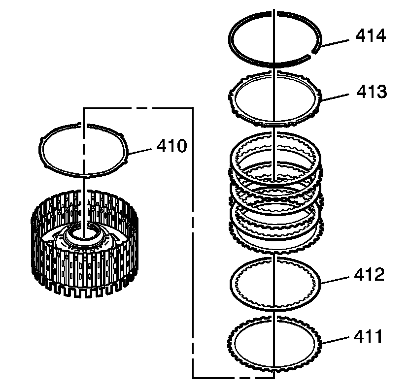
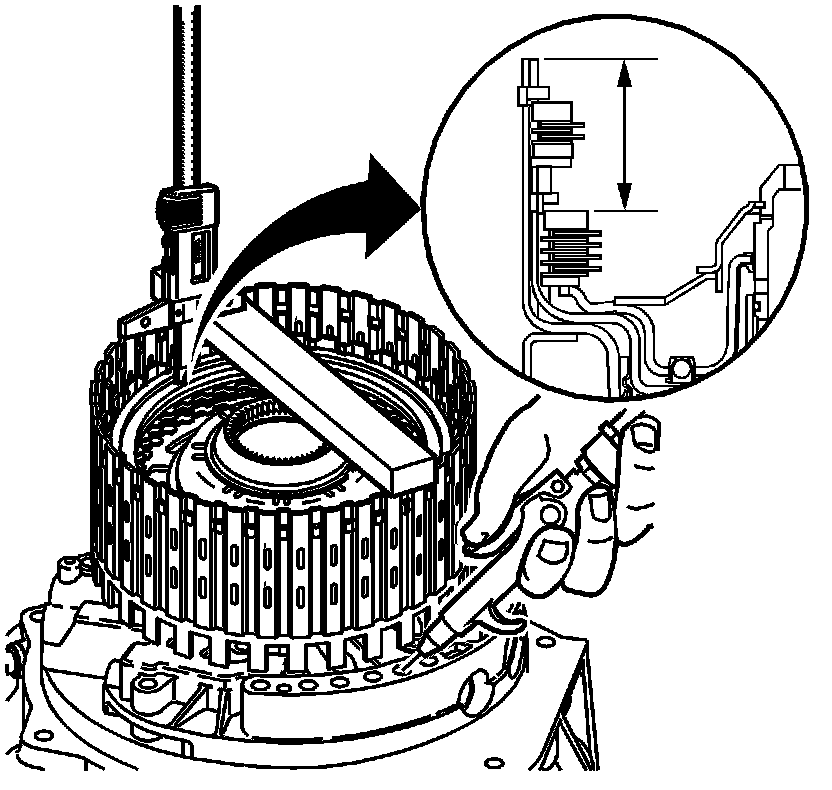
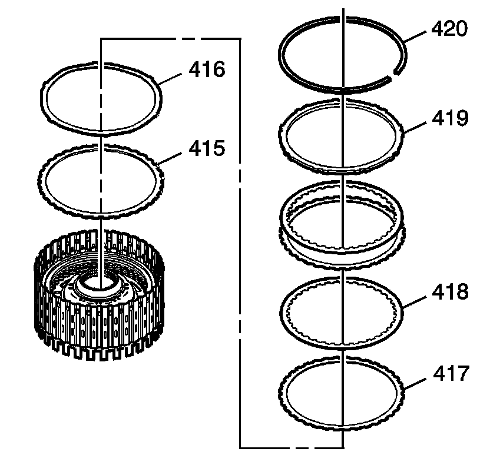
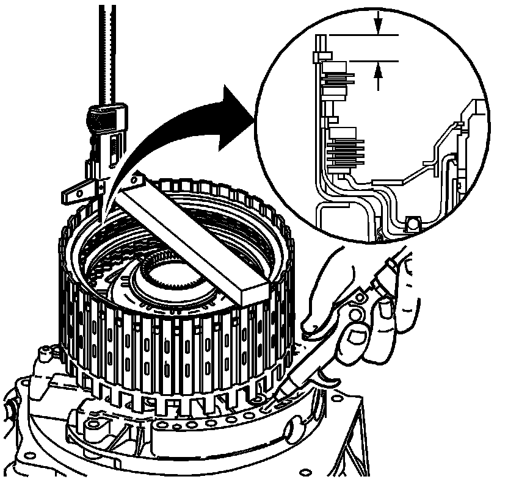

Direct and Reverse Clutch Assemble
Direct and Reverse Clutch Assemble
Tools Required
* J 38734 Intermediate Spring Compressor Adapter
* J 45133 Seal Protector
* J 45139 Compressor Plate

1. Inspect the reverse clutch housing for the following:
* Plugged feed passages
* Worn or damaged splines
* Seal ring groove nicks or burrs
* Cracked or blocked fluid passages
* Worn or damaged bushing
2. Inspect the reverse clutch piston and the direct clutch piston for the following:
* Cracks or damage to seal grooves
* Wear on the piston
* Inner seal damage
* Damaged ball check valve
* Worn or damaged clutch plates
3. Install the reverse clutch piston inner seal (402).
4. Install the reverse clutch piston (404).

5. Install J 45133 onto the direct and reverse clutch assembly.
6. Install the direct clutch piston (406).

7. Install the piston spring (407).
8. Install the piston spring retainer (408).

9. Use J 38734 (1) andJ 45139 (2) to compress the direct and reverse piston spring.
10. Install the direct and reverse clutch spring retainer ring (409).

11. Install the apply plate (410).
12. Install the clutch plates (412, 411), starting with the direct clutch plate (411) with outer splines, alternating with the direct clutch plate (412) with inner splines. Refer to Clutch Plate Selection Specifications (Clutch Plate Selection Specifications) .
13. Install the backing plate (413).
14. Install the backing plate retainer (414).

15. Measure the distance between the direct clutch backing plate and the bottom of the gage bar. Measure three times in different locations on the backing plate. Record this as H1.
16. Apply 65 PSI (448.17 kPa) of air pressure to the specified port. Measure the distance between the direct clutch backing plate and the bottom of the gage bar. Measure three times in different locations on the backing plate. Record this as H2.
17. Subtract H2 from H1. This is the clutch pack travel. Refer to Clutch Piston Travel Specifications (Clutch Piston Travel Specifications) .

18. Install the reverse clutch spacer (415).
19. Install the apply plate (416).
20. Install the clutch plates (417, 418), starting with clutch plates (417) with outer splines, alternating with clutch plates (418) with inner splines. Refer to Clutch Plate Selection Specifications (Clutch Plate Selection Specifications) .
21. Install the reverse clutch backing plate (419).
22. Install the reverse clutch backing plate retainer (420).

23. Measure the distance between the reverse clutch backing plate and the bottom of the gage bar. Measure three times in different locations on the backing plate. Record this as H1.
24. Apply 65 PSI (448.17 kPa) of air pressure to the specified port. Measure the distance between the reverse clutch backing plate and the bottom of the gage bar. Measure three times in different locations on the backing plate. Record this as H2.
25. Subtract H2 from H1 this is the clutch pack travel. Refer to Clutch Piston Travel Specifications (Clutch Piston Travel Specifications) .